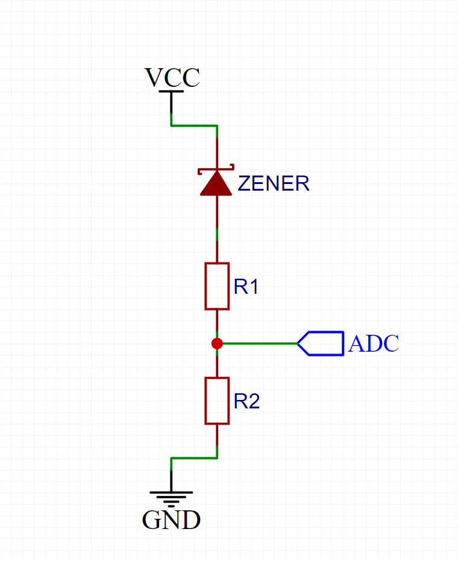

Battery Max Voltage:
v
Battery Min Voltage:
v
ADC Max Voltage:
v
ADC Min Voltage:
v
Zener Drop Diode:
-none-
2v
2.2v
2.4v
2.7v
3v
3.3v
3.6v
3.9v
4.3v
4.7v
5.1v
5.6v
6.2v
6.8v
7.5v
8.2v
9.1v
10v
11v
12v
13v
15v
16v
18v
20v
22v
24v
27v
30v
39v
Sense Current:
mA
Resistors to Use:
E12 (±10%)
Calculate
R1 Value:
-
R2 Value:
-
Zener Voltage:
- v
Actual Max Current:
- mA
Actual Max ADC Voltage:
- v
Actual Min ADC Voltage:
- v
ADC Resolution:
8-bit
10-bit
12-bit
16-bit
ADC Max Value:
-
ADC Min Value:
-
